MediLink, the Integrated Healthcare System of the Municipality of Oas, connects patients with the Municipal Health Office. The Secretary handles the front desk: patients, appointments, bills and follow-ups. As a Secretary you can:
view upcoming appointments, and reschedule or cancel them;
add new patients and update their profiles;
book an appointment for a patient with a doctor;
upload laboratory and imaging attachments to a patient's record;
add bills, correct bill amounts and record payments;
view, filter and print receipts; and
keep track of patients who need a follow-up visit.
IMPORTANTSample data only. All patients, doctors, appointments, bills, receipts and contact details shown in this manual are sample data used for training. They are not real records.
NOTE Screens in this manual were captured from the live system on 24 October 2026 with a secretary account.
1.2 Signing in
Open a web browser and go to medilink.oas.lguapp.com.
On the MediLink home page, click LOGIN at the top right (Figure 1.1).
Sign in with the secretary account given to you by the system administrator.
After signing in, MediLink opens the Appointment page (Section 2).
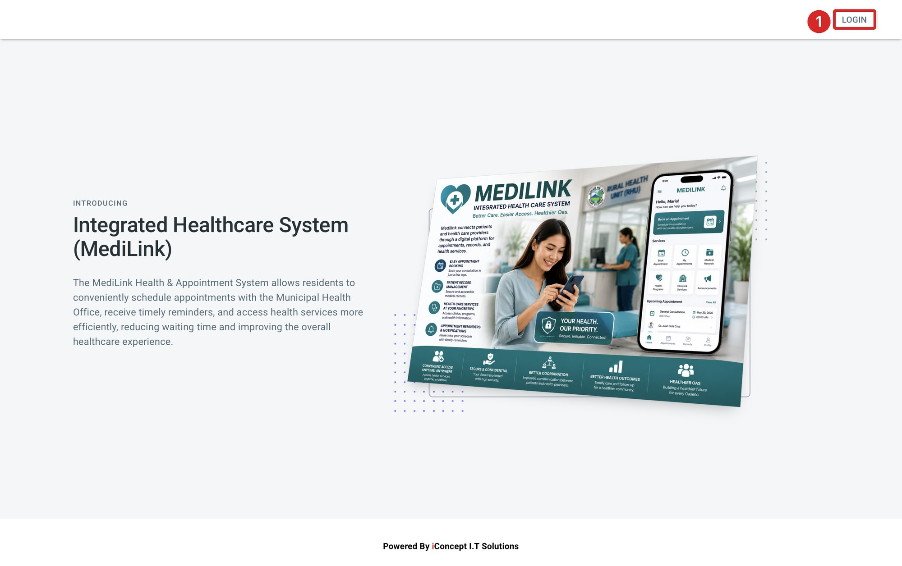
Figure 1.1. The MediLink home page.
1LOGIN button
1.3 The Secretary screen
Figure 1.2. The Secretary screen.
1Top bar2Your profile (photo, name and email)3Main menu4Account menu5Work area
Part
What it does
1 Top bar
Shows that you are signed in with the Secretary role.
2 Your profile
Your photo, name and email.
3 Main menu
Appointment (Section 2), Patient List (Section 3), Billing (Section 4), Reports (Section 5) and Follow Up (Section 6). The page you are on is shown in blue.
4 Account menu
Click it for Account and Logout (1.4).
5 Work area
The content of the page you opened. Most pages show a list on the left and the details of the selected item on the right.
1.4 Account menu and signing out
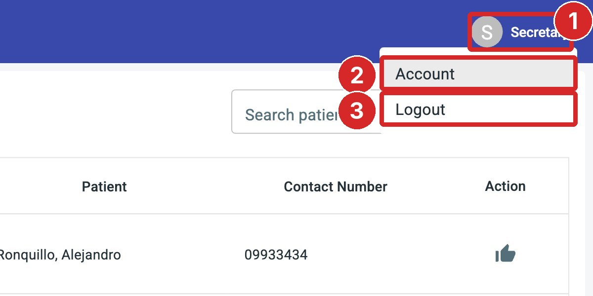
Figure 1.3. The account menu at the top right.
1Account menu2Account3Logout
Click Account to change your profile, email or password (Section 7).
Click Logout to sign out. Always sign out when you leave a shared computer.
SECTION 2
Appointments
The Appointment page lists patients with booked appointments. From here you can see the details of an appointment, reschedule it or cancel it.
Click Appointment in the main menu. Each row is one appointment, shown by the patient's name. A patient with several appointments appears once for each.
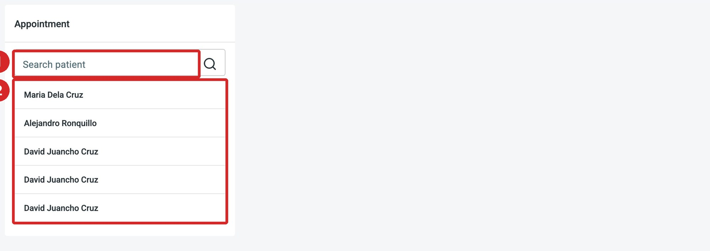
Figure 2.1. The appointment list.
1Search patient2Appointments
To find a patient's appointments, type the name in Search patient. The list narrows as you type (Figure 2.2).
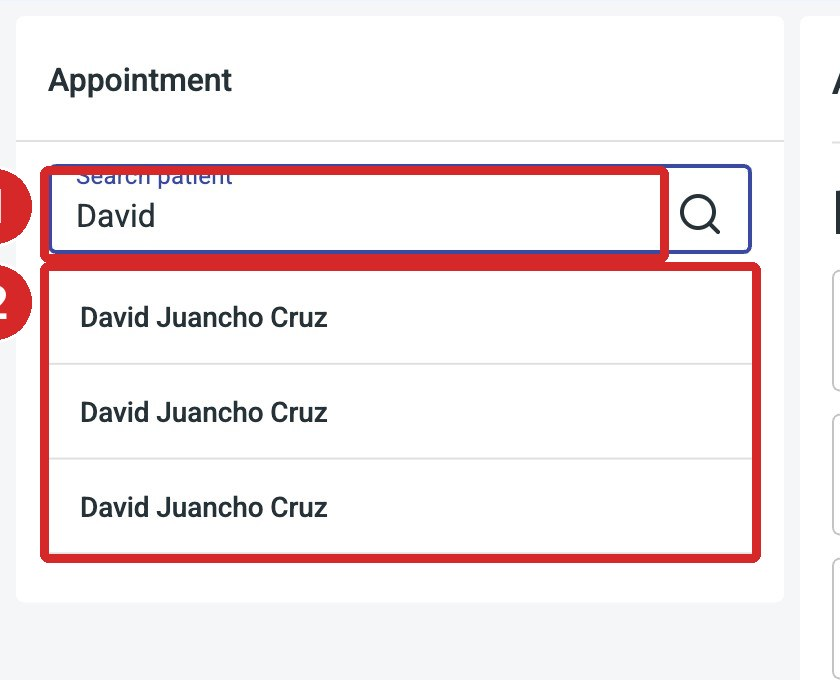
Figure 2.2. Searching the appointment list.
1Search text2Matching appointments
NOTE The search matches capital and small letters exactly. David or Cruz finds the patient, but david or cruz does not. Type names with a capital first letter.
2.2 Viewing an appointment
Click a patient in the list. The Appointment Details panel opens on the right.
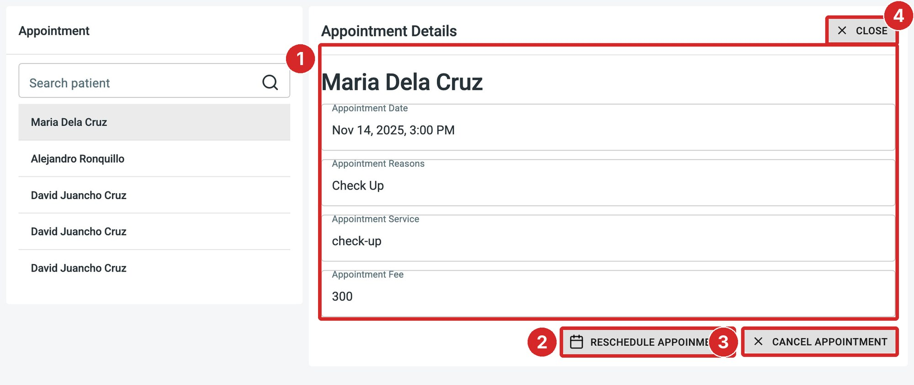
Figure 2.3. Appointment details.
1Date and time, reason, service and fee2RESCHEDULE APPOINMENT3CANCEL APPOINTMENT4CLOSE
Field
What it shows
Appointment Date
The date and time of the appointment.
Appointment Reasons
The reason the patient gave when booking.
Appointment Service
The service booked, for example check-up.
Appointment Fee
The fee for the service, in pesos.
2.3 Rescheduling an appointment
Open the appointment (2.2) and click RESCHEDULE APPOINMENT.
In the Reschedule Appointment window, pick the new date under Date Picker.
Pick the new time under Time Picker.
Click SAVE, or CLOSE to keep the old schedule.
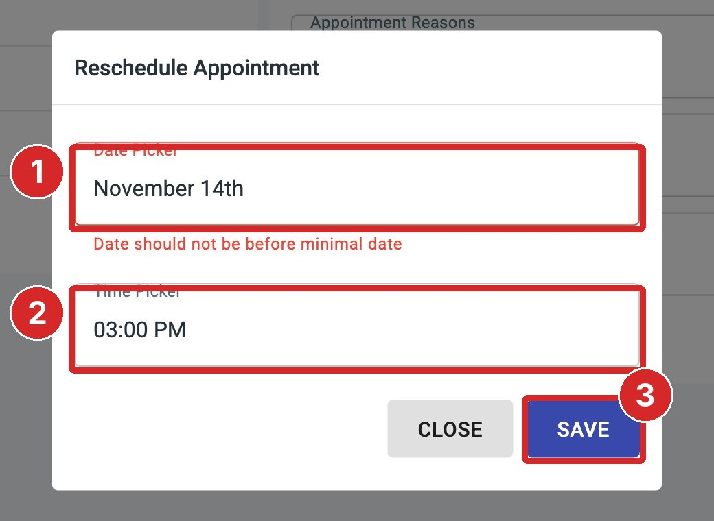
Figure 2.4. The Reschedule Appointment window.
1Date Picker2Time Picker3SAVE
NOTE The message Date should not be before minimal date means the date shown is already past. Choose today or a later date.
2.4 Cancelling an appointment
To cancel, open the appointment (2.2) and click CANCEL APPOINTMENT.
WARNING Cancel only when the patient asks to cancel. This button was not clicked while preparing this manual, so check with the administrator whether MediLink asks you to confirm and whether a cancelled appointment can be restored.
SECTION 3
Patient List
The Patient List is where you add patients, update their profiles, book appointments for them and upload their laboratory and imaging files.
Click Patient List in the main menu. All patients are listed on the left in alphabetical order. Type in Search patient to narrow the list, then click the patient's name to open the details (3.3).
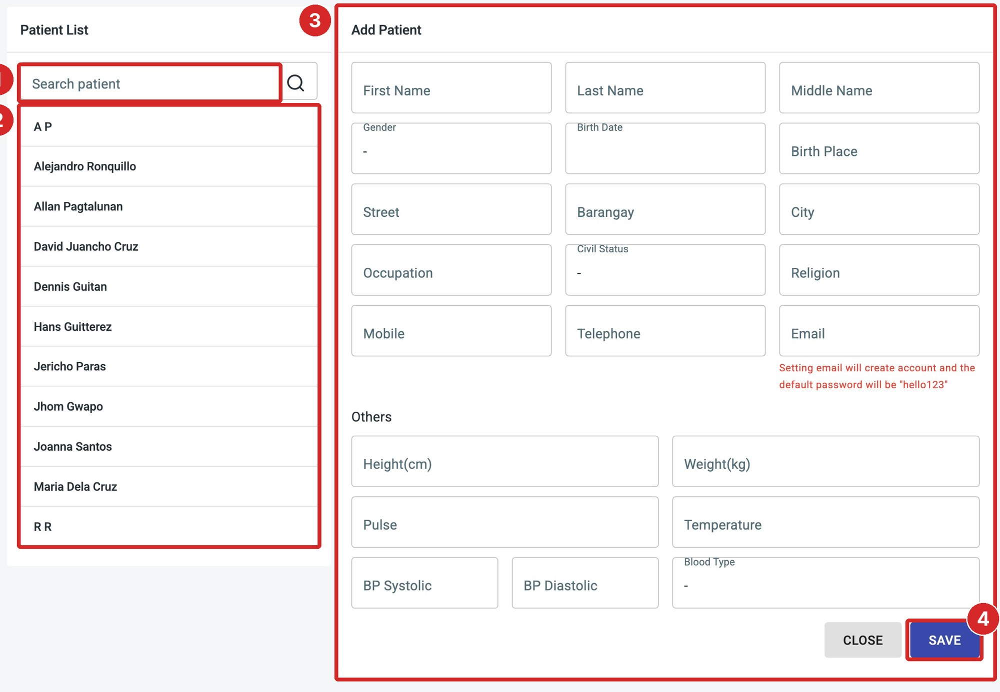
Figure 3.1. The Patient List page with the Add Patient form.
1Search patient2Patients3Add Patient form4SAVE
3.2 Adding a new patient
When no patient is selected, the Add Patient form is shown on the right (Figure 3.1, box 3).
Type the patient's First Name, Last Name and Middle Name.
Choose the Gender, then enter the Birth Date and Birth Place.
Type the address: Street, Barangay and City.
Type the Occupation, choose the Civil Status (Single, Married or Divorced), and type the Religion.
Type the Mobile number, and the Telephone and Email if the patient has them.
Under Others, enter the patient's height (cm), weight (kg), pulse, temperature, blood pressure (systolic and diastolic) and choose the Blood Type.
Click SAVE, or CLOSE to clear the form.
IMPORTANT Entering an Email creates a MediLink account for the patient with a default password (shown under the Email field). Ask the patient to sign in and change the password right away. The email becomes the patient's username and cannot be changed later.
3.3 Patient details
Click a patient's name. The Patient Details panel shows the patient's address, contact number, gender, birth date, birth place, religion and civil status. Below it are four tabs.
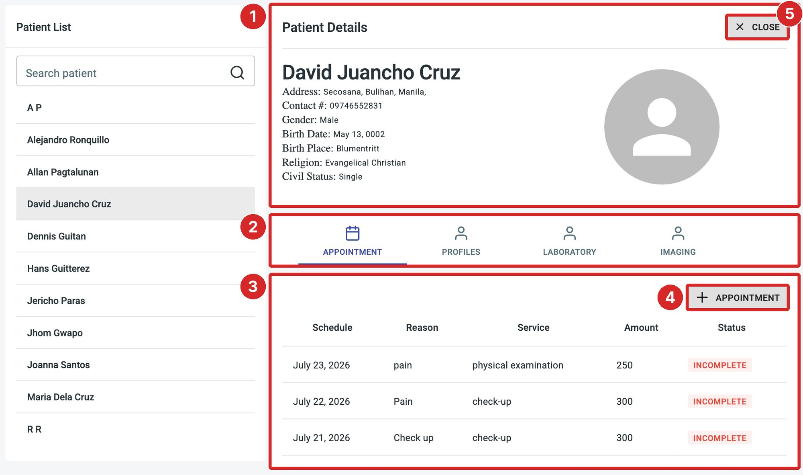
Figure 3.2. Patient details.
1Patient information2Tabs: Appointment, Profiles, Laboratory, Imaging3The patient's appointments4APPOINTMENT button (book a new appointment)5CLOSE
Tab
What it shows
See
Appointment
The patient's appointments with schedule, reason, service, amount and status.
3.4
Profiles
The patient's full profile and health measurements.
3.5
Laboratory
Laboratory files attached to the patient's record.
3.6
Imaging
Imaging files attached to the patient's record.
3.6
3.4 Booking an appointment for a patient
Open the patient (3.3). On the Appointment tab, click APPOINTMENT.
In Add Appointment, pick the date (Date Picker) and time (Time Picker).
Type the Reason of Appointment.
Choose the Doctor. Each doctor is listed with his or her specialty.
Choose the Service. The services of the chosen doctor appear with their fees, for example check-up - ₱300 (Figure 3.4).
Click SAVE, or CLOSE to cancel.
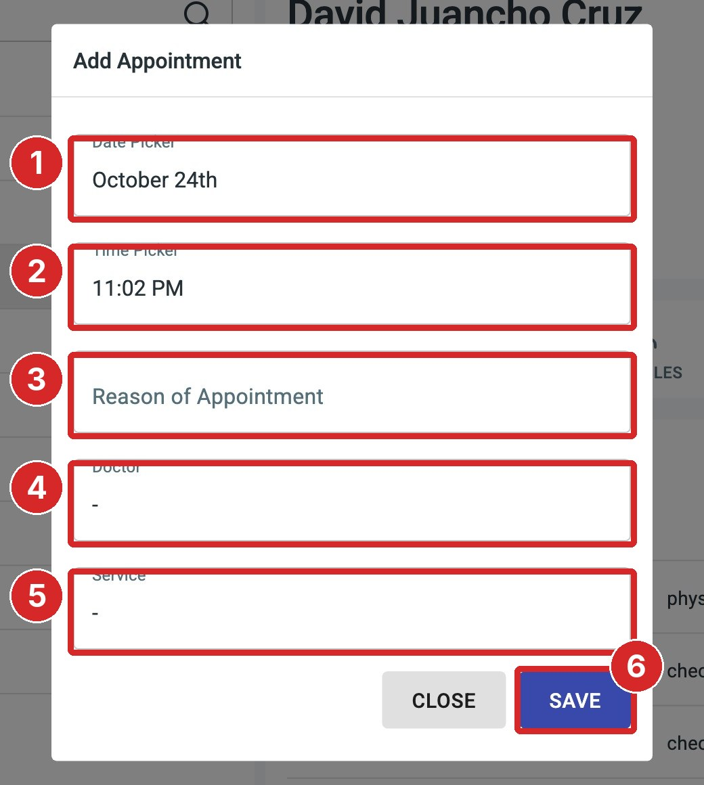
Figure 3.3. The Add Appointment window.
1Date Picker2Time Picker3Reason of Appointment4Doctor5Service6SAVE
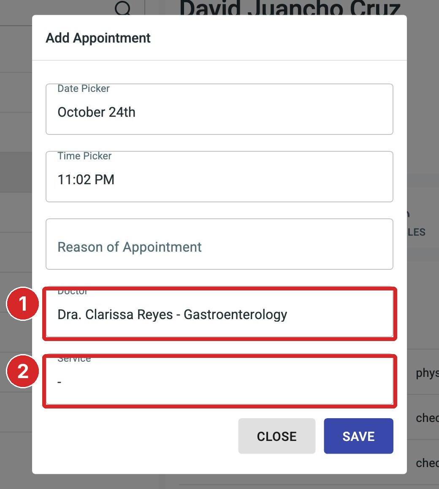
Figure 3.4. After choosing a doctor, the doctor's services can be chosen.
1Doctor2Service
NOTE The Service list says No service added until you choose a doctor.
3.5 Viewing and editing a profile
The Profiles tab shows the patient's personal details and Health Records (height, weight, pulse, temperature, blood pressure and blood type). Fields marked * are required.
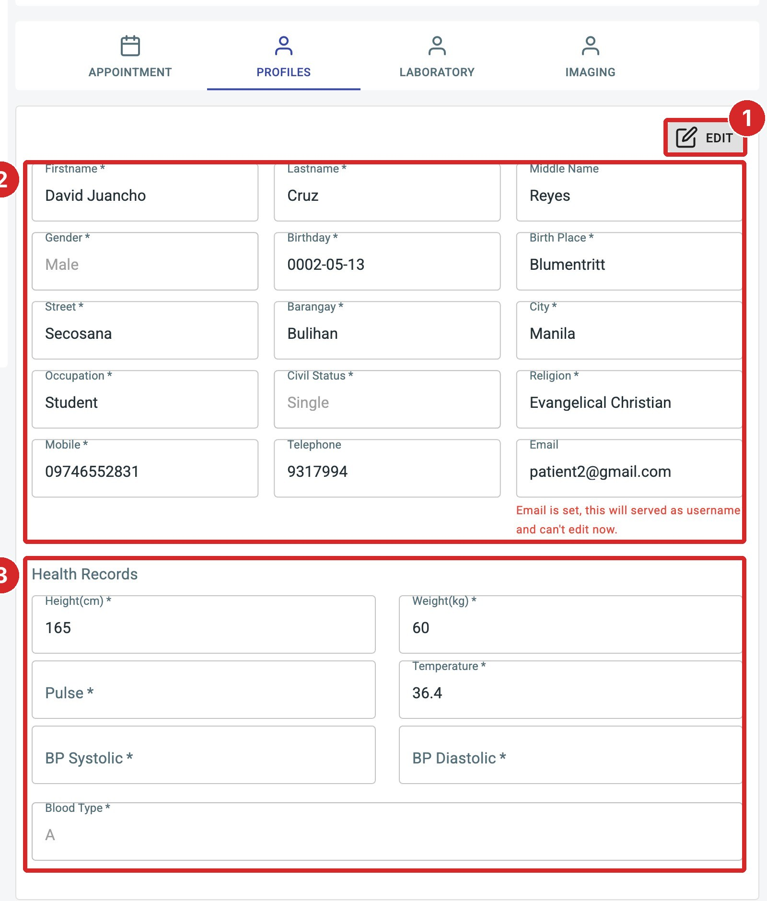
Figure 3.5. The Profiles tab.
1EDIT2Personal details3Health Records
Click EDIT.
Change the details that need updating.
Click SAVE, or CANCEL to discard your changes.
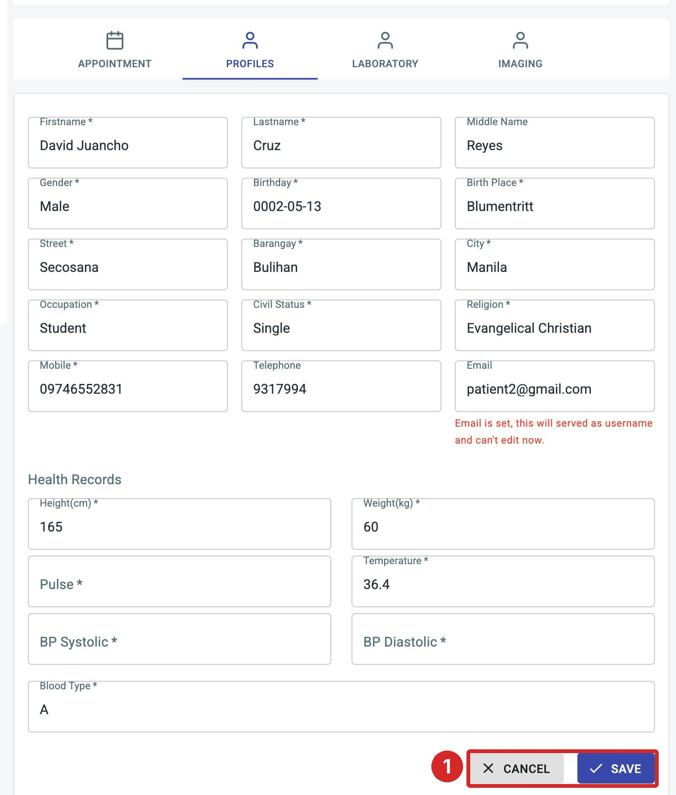
Figure 3.6. Editing a profile.
1CANCEL and SAVE
NOTE If the patient has an email, it serves as the patient's username and cannot be edited.
3.6 Laboratory and imaging attachments
The Laboratory and Imaging tabs list files attached to the patient's record, with the date and who added them (for example patient, secretary or imaging). Click the arrow (›) on a row to show the attached images.
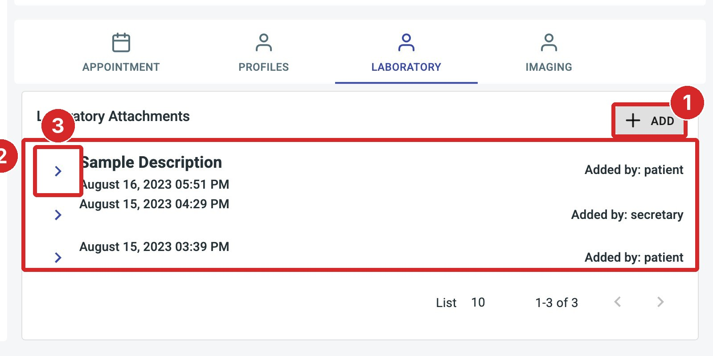
Figure 3.7. The Laboratory tab.
1ADD2Attachments3Show or hide the images
To attach a file:
On the Laboratory or Imaging tab, click ADD. The Upload images panel opens.
Type a Description of the file.
Drag the file onto the box, or click browse and choose it from your computer.
Click UPLOAD.
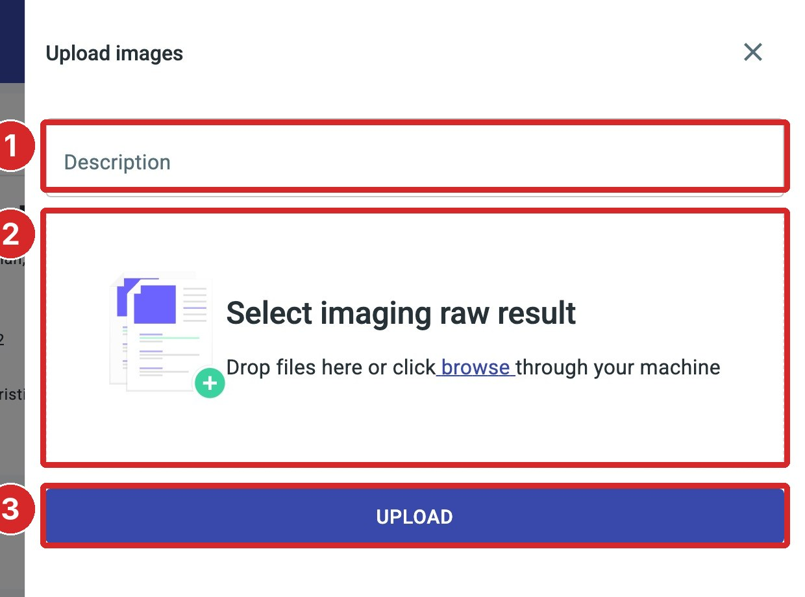
Figure 3.8. The Upload images panel.
1Description2File drop area3UPLOAD
NOTE When this manual was prepared, the attached images showed as broken image icons when a row was opened, and the upload panel says Select imaging raw result on the Laboratory tab too. Report these to the administrator.
SECTION 4
Billing
The Billing page lists patients with unpaid bills. Here you review charges, add bills, correct amounts and record payments.
Click Billing in the main menu. The Unpaid Bills list shows each patient with a balance. Type in Search patient to find a patient, then click the name.
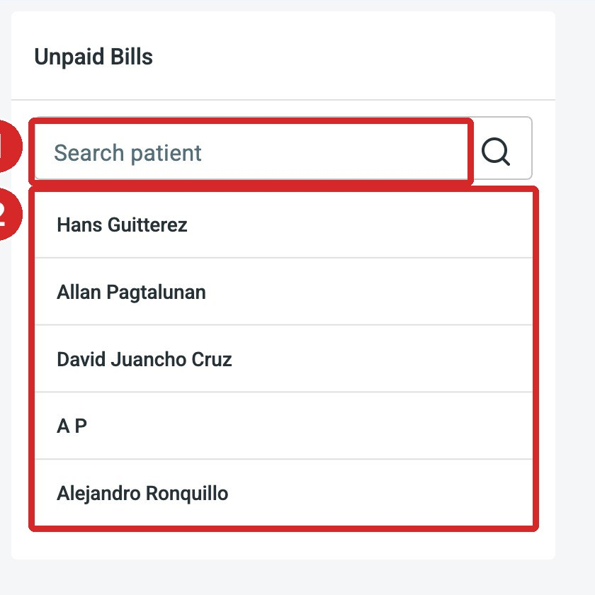
Figure 4.1. The Unpaid Bills list.
1Search patient2Patients with unpaid bills
The Unpaid Bill Details panel lists each charge (order) and amount, and the Total.
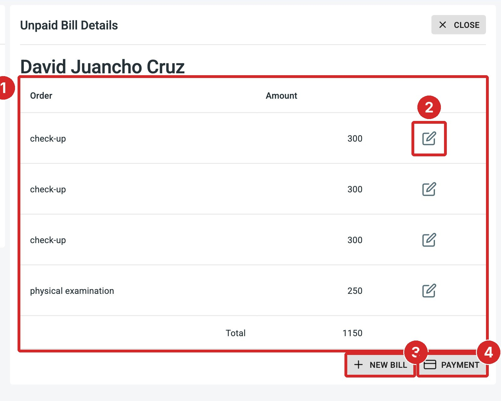
Figure 4.2. Unpaid bill details.
1Charges and total2Edit Amount3NEW BILL4PAYMENT
4.2 Correcting a bill amount
Click the edit icon (Edit Amount) on the charge.
Type the correct Amount.
Type the Reason for edit.
Click SAVE, or CLOSE to cancel.
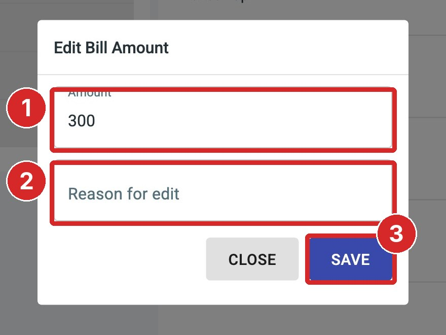
Figure 4.3. The Edit Bill Amount window.
1Amount2Reason for edit3SAVE
IMPORTANT Always give a clear reason when changing an amount, for example a discount or a correction.
4.3 Adding a bill
Click NEW BILL.
Under Category, choose service to bill one of the clinic's services, or others for any other charge.
For service: choose the Service; its fee is shown in the list, for example Vaccine - ₱700.
For others: type what the charge is for (If others, please specify) and the Amount.
Click SAVE, or CLOSE to cancel.
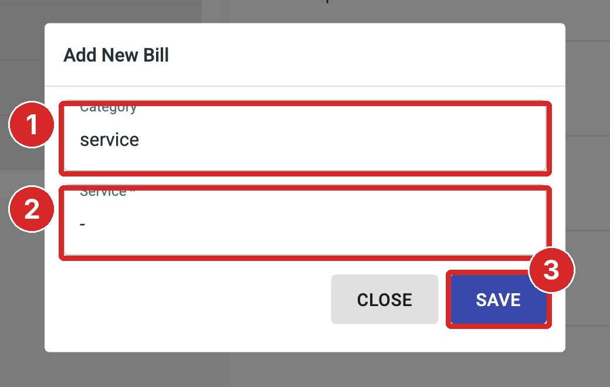
Figure 4.4. Adding a bill for a service.
1Category: service2Service3SAVE
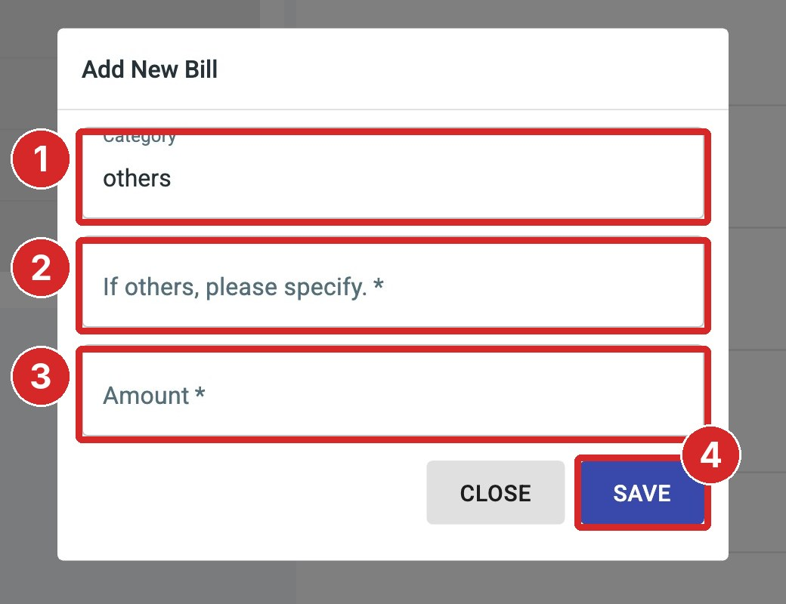
Figure 4.5. Adding another charge.
1Category: others2Description of the charge3Amount4SAVE
4.4 Recording a payment
Click PAYMENT. The Total Cost of the unpaid bills is shown.
Type the Amount the patient paid.
Click SAVE, or CLOSE to cancel.
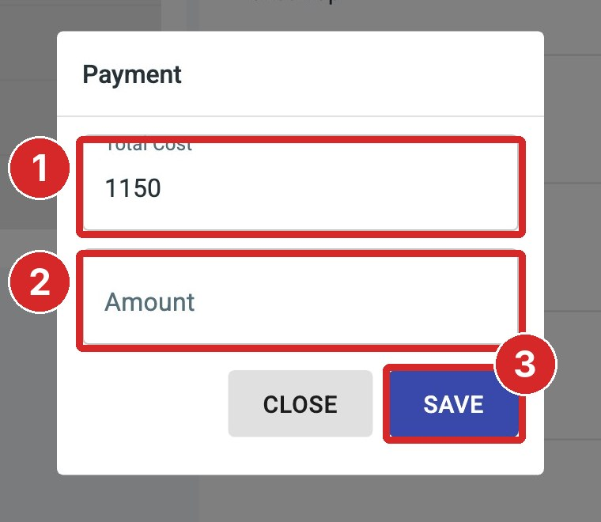
Figure 4.6. The Payment window.
1Total Cost2Amount paid3SAVE
NOTE Receipts, with the payment and change, are listed in Reports (Section 5). Saving a payment was not tested while preparing this manual.
SECTION 5
Reports
The Reports page lists receipts so you can review collections and reprint a receipt.
Click Reports in the main menu. Each row shows the Date, Receipt No., Patient, Service and Rate. The Total of the listed receipts is shown at the bottom.
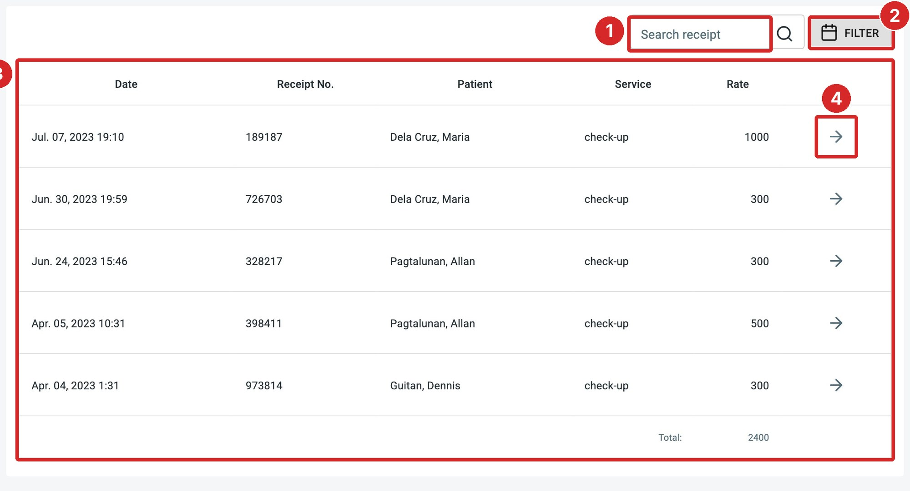
Figure 5.1. The Reports page.
1Search receipt2FILTER3Receipts and total4Details
5.2 Filtering by date
Click FILTER.
Set Date & Time From and Date & Time To. Click the calendar icon to pick a date.
Click FILTER in the window. The list shows only receipts in that period.
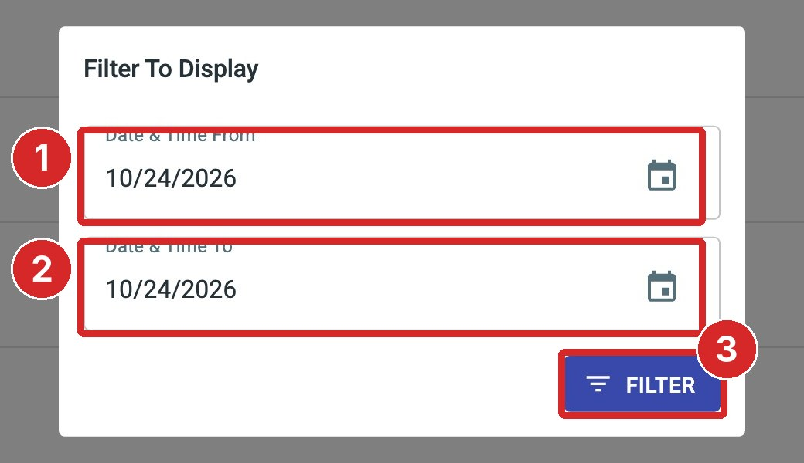
Figure 5.2. The Filter To Display window.
1Date & Time From2Date & Time To3FILTER
5.3 Viewing and printing a receipt
Click the arrow (Details) at the end of a receipt row.
The receipt opens with the clinic's name, address, contact number and hours, and the patient's name, address and date.
Click PRINT to print it, or CLOSE to return to the list.
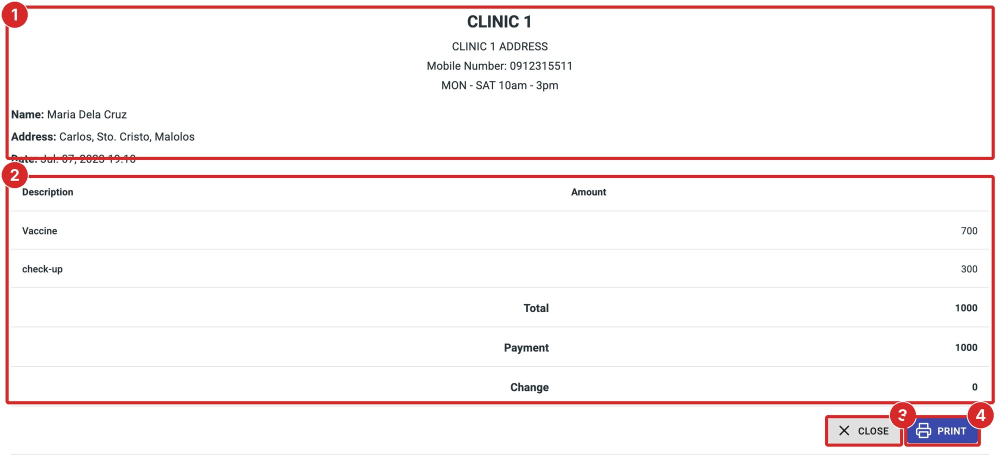
Figure 5.3. A receipt.
1Clinic and patient details2Charges, total, payment and change3CLOSE4PRINT
SECTION 6
Follow Up
The Follow Up page lists patients whom a doctor asked to come back, so you can contact them.